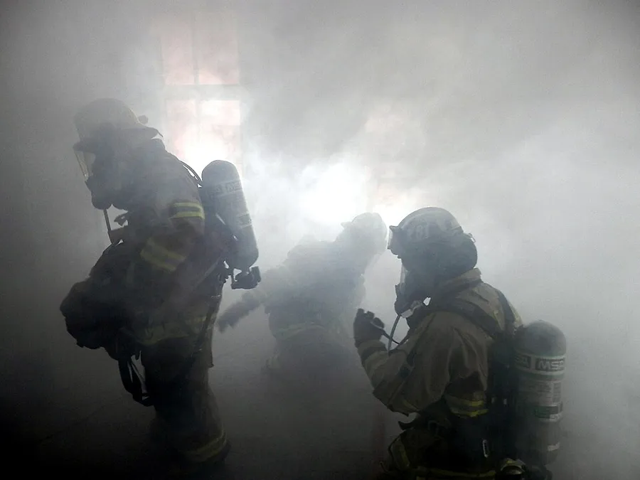

Home · Services · About · Contact · Reviews
Smoke odor is the hardest part of fire damage to fix — it hides inside porous materials, insulation, and ductwork where no amount of airing out can reach it. Professional odor removal uses thermal fogging and ozone treatment to neutralize odor at the molecular level.

Heated deodorizing fog that penetrates porous materials where smoke odor hides — the professional standard for odor removal.
Typical time: Half to full day
Ozone gas treatment that oxidizes odor molecules in unoccupied spaces. Powerful but must be done by pros.
Typical time: 1-2 days including airing
Protein-smoke odor is the hardest to remove — invisible residue, unbearable smell. Dedicated treatment protocol.
Typical time: 1-2 days
Whole-home wildfire smoke remediation: HVAC, attic insulation, soft contents and surfaces.
Typical time: 2-4 days
A grease fire is contained to the stove, but protein smoke odor fills the whole house. Standard cleaning doesn't touch it. Thermal fogging of the kitchen and adjoining rooms plus ozone treatment clears the odor in 1–2 days — thermal fogging $400–$1,200 (national range).
Heated deodorizing fog that penetrates porous materials where smoke odor hides — the professional standard for odor removal. Typical range $400–$1,200; $200–$600 per area (restorenearme.com).
Ozone oxidizes odor molecules but is only used in unoccupied spaces by trained professionals, followed by airing out. Typical range $300–$900; $200–$800 (restorenearme.com).
Protein smoke from cooking fires is nearly invisible but leaves a strong, persistent odor that standard cleaning can't lift. It needs a dedicated treatment protocol.
Half a day to 2–4 days depending on the method and how far the odor spread. Thermal fogging is half to a full day; ozone treatment is 1–2 days including airing.
Call now — a local pro finds where the odor hides and removes it properly.
📞 Call (800) 555-0147 Now